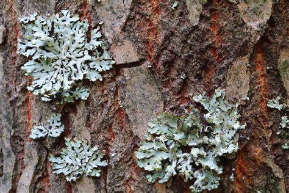

Existem milhões de espécies de fungos em todo o mundo, apresentando uma incrível diversidade em termos de morfologia, habitat e modo de vida. Abaixo estão alguns dos principais grupos de fungos:
1-Basidiomycota: Também conhecidos como cogumelos, eles possuem corpos frutíferos visíveis, compostos por uma estrutura em forma de guarda-chuva chamada basidiocarpo. São encontrados em uma variedade de habitats, desde florestas até prados e até mesmo ambientes aquáticos. Exemplos famosos incluem cogumelos comestíveis, como o champignon e o shiitake.
2-Ascomycota: Este grupo inclui uma ampla gama de fungos, como mofos, leveduras e líquens. Eles têm uma estrutura reprodutiva chamada asco, que contém esporos em seu interior. Alguns ascomicetos são responsáveis pela produção de antibióticos, como o Penicillium, usado na fabricação de penicilina.
3-Zygomycota: Esses fungos são geralmente encontrados em ambientes terrestr
es e possuem uma estrutura reprodutiva chamada zigosporângio. São conhecidos por sua rápida taxa de crescimento e capacidade de decompor matéria orgânica.
4-Glomeromycota: São fungos micorrízicos arbusculares (FMA), que formam uma simbiose mutualística com as raízes de muitas plantas, auxiliando na absorção de nutrientes do solo. São essenciais para a saúde das plantas em ecossistemas terrestres.
5-Chytridiomycota: Os quitrídeos são fungos aquáticos encontrados principalmente em ambientes de água doce. Muitas espécies são sapróbias, desempenhando um papel importante na decomposição da matéria orgânica. Alguns quitrídeos são parasitas de anfíbios e estão associados à doença quitridiomicose, uma ameaça à conservação de muitas espécies de anfíbios em todo o mundo.